We focus on applications arising in inverse problems in which the measurement model has the form
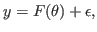
where
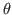
; and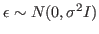
. Then the probability density function for the measurements
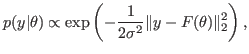
where `
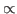
' denotes proportionality. In Bayesian inverse problems, one also assumes a prior probability density function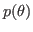
, which incorporates both prior knowledge and uncertainty about the unknown parameters . In this talk, we focus on the case in which the prior is of L1-type, i.e.,
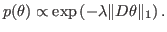
Such priors include the total variation prior and the Besov
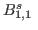
space priors. With these two probability models (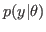
and ) in hand, by Bayes' Law, the posterior density function has the form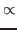 |
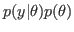 |
||
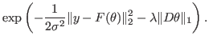 |
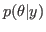
is non-Gaussian due to the presence of the L1-norm. Moreover, in inverse problems, is high-dimensional. Taken together, these challenges make the problem of sampling from - which is a requirement if one wants to perform uncertainty quantification - difficult. To overcome this, we extend the Randomize-then-Optimize (RTO) method, which was recently developed for posterior sampling when